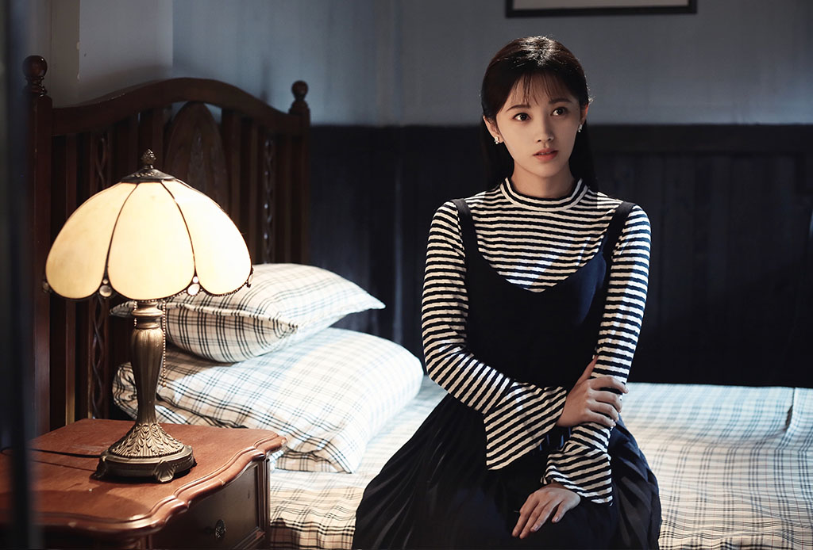
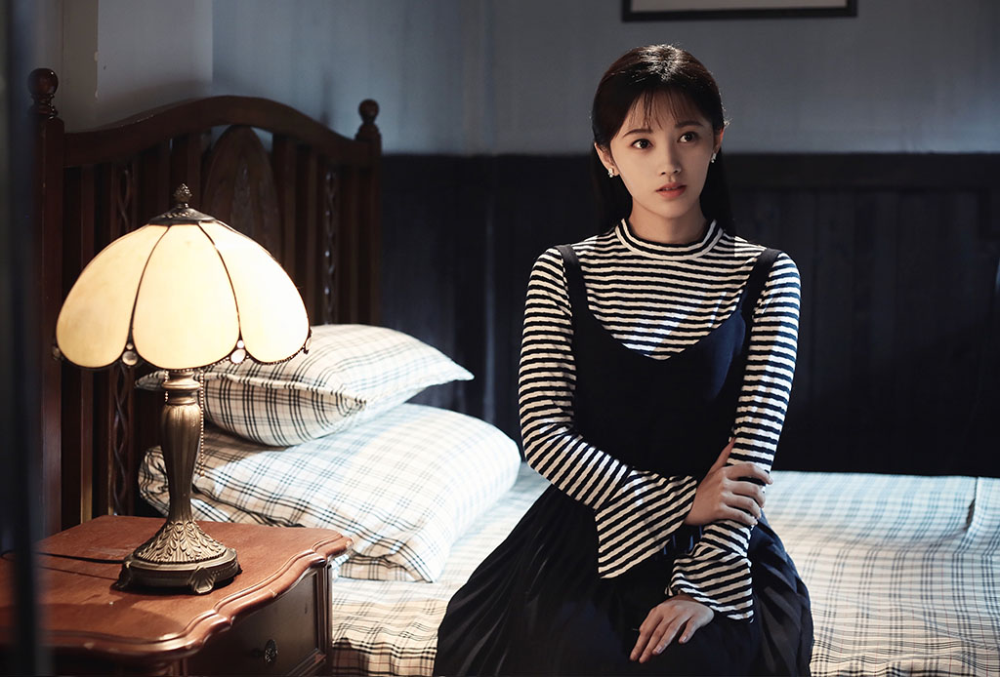
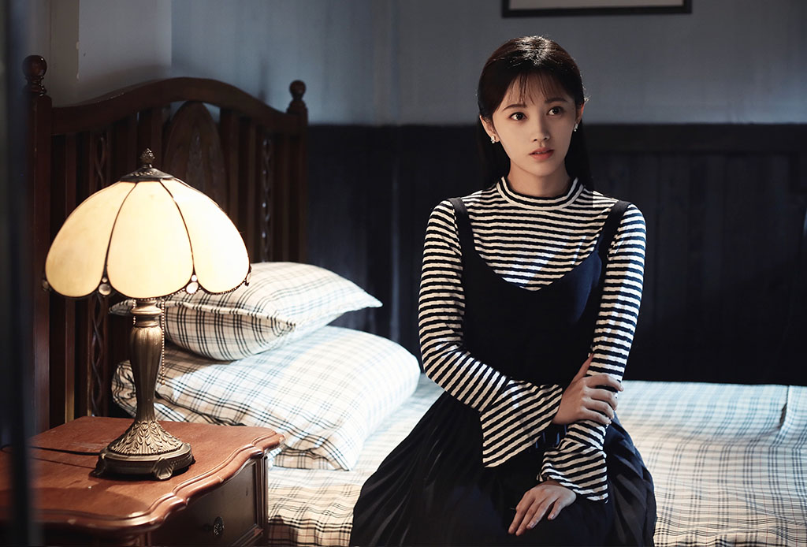

主要讲述上沽警察局长之女林九歌遭人陷害，含冤入狱，历经重重磨难，不惜越狱以求真相，与警察龙天羽并肩而战，破解迷局，誓将真凶绳之以法的故事。蒋恺在剧中饰演的关泊君是一个拥有多重身份的角色，他是九歌的生父，却因“谋杀市长”罪名含冤入狱，他忍辱负重，最终帮助女儿还原一切真相
 

赖水清
鞠婧祎、炎亚纶、韩栋、张予曦、朱圣祎、张芷然
主要讲述上沽警察局长之女林九歌遭人陷害，含冤入狱，历经重重磨难，不惜越狱以求真相，与警察龙天羽并肩而战，破解迷局，誓将真凶绳之以法的故事。蒋恺在剧中饰演的关泊君是一个拥有多重身份的角色，他是九歌的生父，却因“谋杀市长”罪名含冤入狱，他忍辱负重，最终帮助女儿还原一切真相
